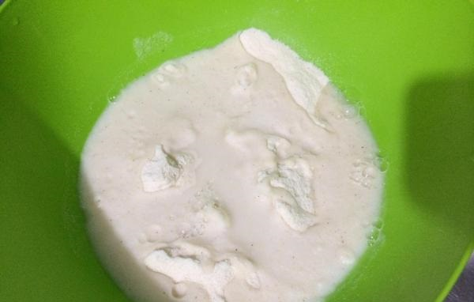
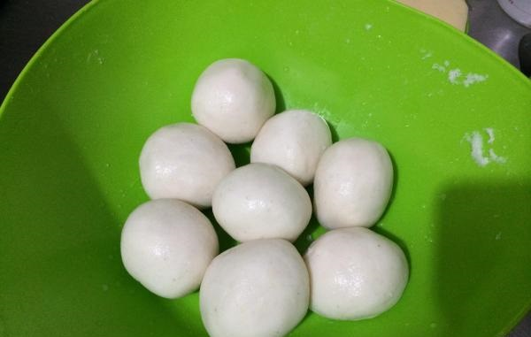
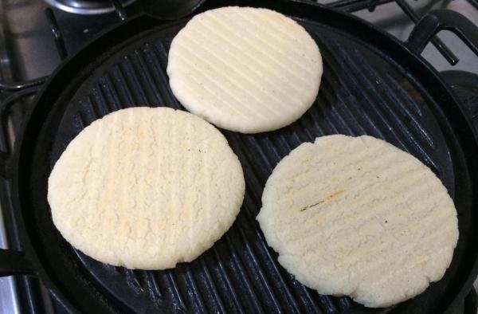
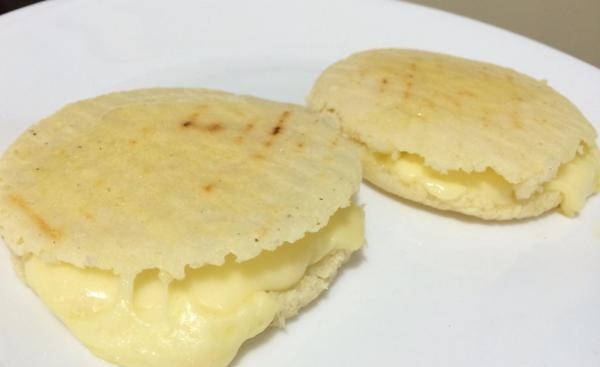

O que é a Arepa?
As arepas são um pão sem glúten tradicional em vários países latino-americanos, onde o milho é o ingrediente principal na dieta. Esta massa, feita de farinha de milho, é geralmente servida ao café da manhã com uma infinita variedade de recheios. As arepas venezuelas destacam-se por serem as mais conhecidas um pouco por todo o mundo, por isso não perca esta receita de arepas venezuelanas fácil e rápida do TudoReceitas e aprenda a preparar!
Ingredientes:
- 500 gramas de farinha de milho fina (fubá),
- 500 mililitros de água quente,
- 1 colher de café de sal,
- 1 colher de café de manteiga amolecida,
- queijo em fatias (opcional).
Como fazer:
- Antes de começar preparando as arepas venezuelas, reúna os ingredientes necessários - as quantidades indicadas rendem 8 arepas.
- Coloque a farinha numa tigela, dissolva o sal na água e misture até obter uma massa homogênea. 
- É importante obter uma massa de arepa compacta e lisa, pelo que terá de sovar bem com as mãos. Quando ficar como na fotografia, acrescente a manteiga e volte a sovar, para incorporar.
- Modele bolas de tamanho médio e deixe repousar por alguns minutos. 
- Abra as bolinhas de massa até obter rodelas com cerca de um dedo de espessura. Cozinhe numa grelha em temperatura baixa, até que fiquem douradas de ambos os lados. 
- Quando estiverem prontas, sugerimos que abra as arepas, recheie com queijo em fatias e leve ao forno a 180ºC por 10 minutos. Desta forma as arepas terminam de cozinhar no interior e o queijo fica derretido.
- Por fim pincele as arepas venezuelas com um pouco de manteiga e polvilhe uma pitada de sal. Desfrute ao café da manhã ou ao lanche, bom apetite! 
Gostou? Bora degustar essa delícia venezuelana assistiendo a música típica do hermoso país da Venezuela !